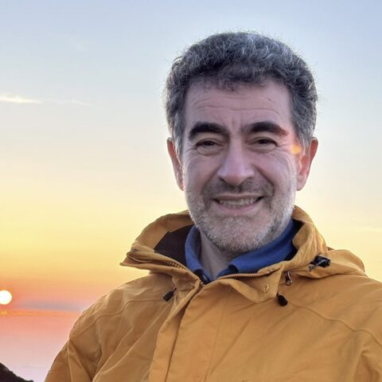

Gos Micklem
DBCLS / University of Cambridge · UK
PI of the InterMine project — HumanMine and FlyMine. Moving the back end from Postgres to QLever; wants BlueGenes to work on any SPARQL endpoint, e.g. the RDF portal. This time: infer the schema of a QLever endpoint into the InterMine model, and MetaStanza to InterMine.
Topics: Databases, RDF/SPARQL, Web dev, Visualisation, Knowledge graphs
Codes in: Perl, Python, C